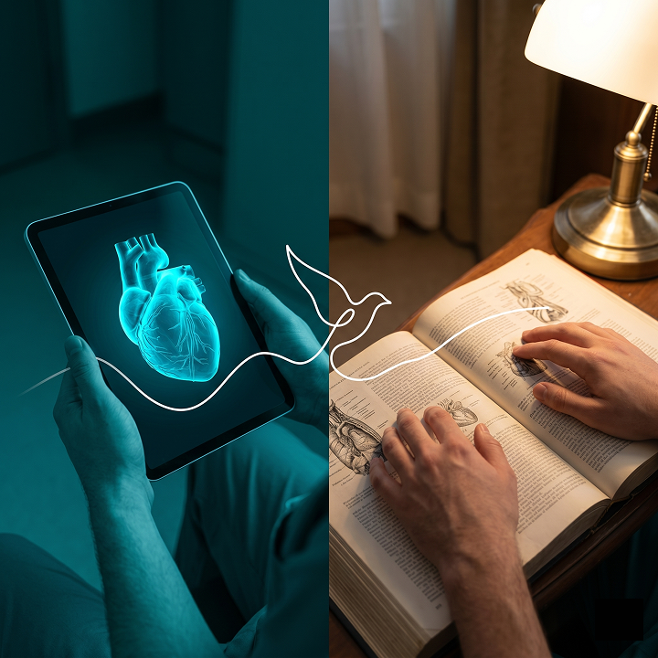
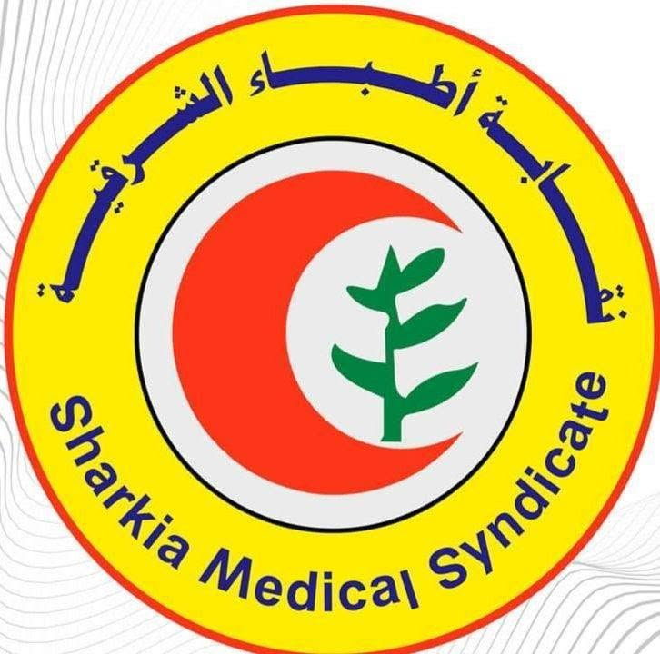
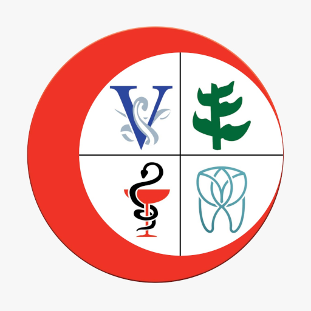
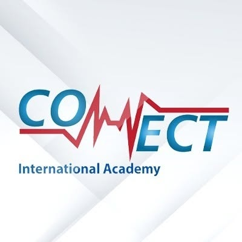
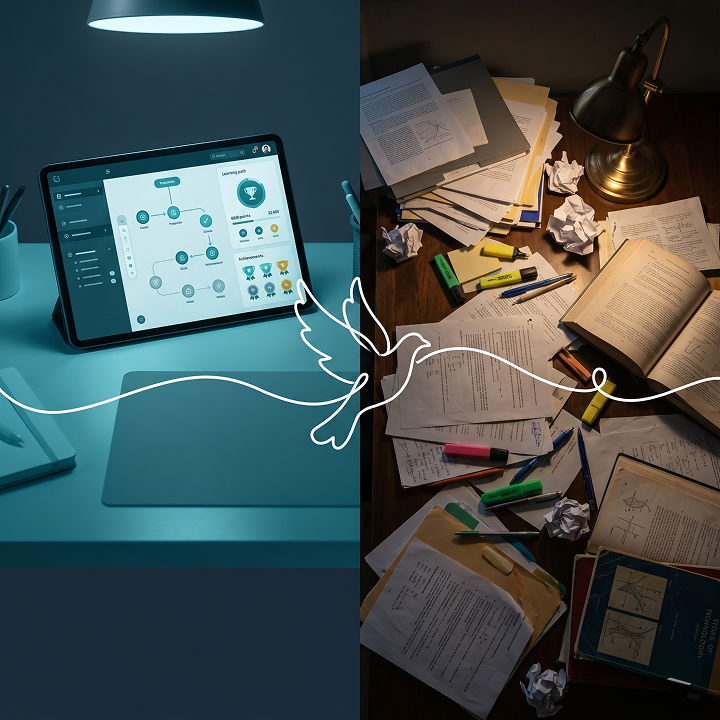
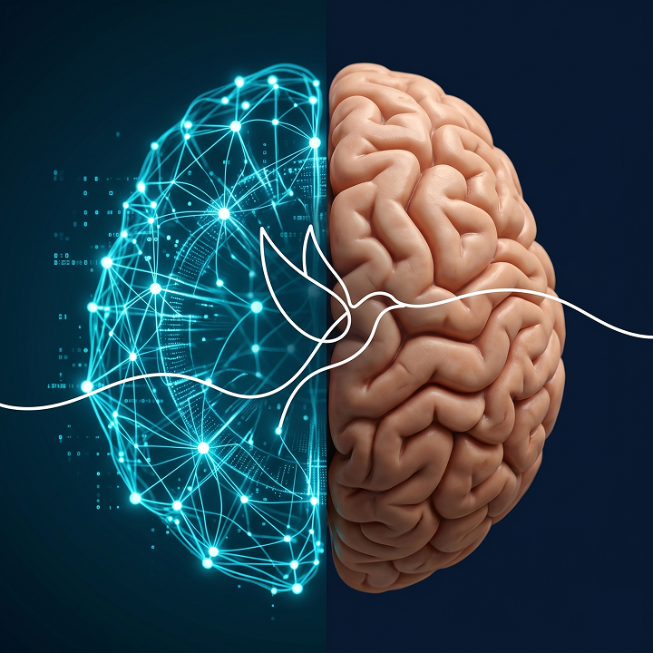
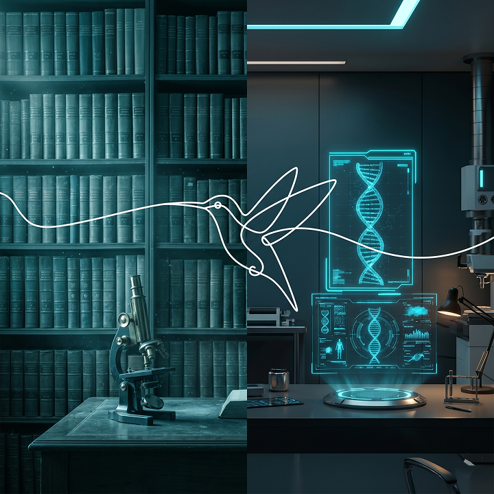

(فيديو لطالب طب يدرس، ومقاطع لغرف سيرفرات)
لسنا مجرد منصة تعليمية..
نحن نبني البنية التحتية الرقمية للتعليم الطبي.
شركة تقنية مصرية تطور حلولًا متكاملة تشمل منصات التعلم، الحوكمة الأكاديمية، الذكاء الاصطناعي، وإنتاج المحتوى الطبي، لتمكين الجامعات والمؤسسات والمحاضرين من تقديم تجربة تعليمية أكثر كفاءة واستدامة.
منظومة متكاملة للتعليم الطبي الرقمي

+1M
ساعة مشاهدة سنوياً
+50K
متعلم وطبيب
+1.6K
كورس طبي
+7
سنوات خبرة في السوق
مؤسسات تعتمد على تقنياتنا

نقابة أطباء الشرقية
اتحاد المهن الطبية
Connect Academyرؤيتنا
أن نصبح البنية التحتية الرقمية الرائدة للتعليم الطبي والتطوير المهني في المنطقة العربية، من خلال توظيف التكنولوجيا، الذكاء الاصطناعي، والحوكمة لبناء تجربة تعلم أكثر كفاءة، مرونة، وتأثيرًا للأطباء والمؤسسات.
رسالتنا
تمكين الأطباء، المحاضرين، الجامعات، والمؤسسات الطبية من تقديم وإدارة وتطوير التعليم الطبي بشكل أكثر ذكاءً واستدامة، عبر منظومة تقنية متكاملة تجمع بين المحتوى، التقييم، المجتمع التعليمي، الحوكمة الأكاديمية، والذكاء الاصطناعي.
من نحن؟
شركة تقنية مصرية تقود التحول الرقمي في التعليم الطبي
تأسست إيملي نوتس (EMLENotes) بهدف إعادة بناء تجربة التعليم الطبي بشكل أكثر ذكاءً، مرونة، واستدامة. على مدار سنوات، تطورت الشركة من منصة تعليمية إلى منظومة تقنية متكاملة تخدم:
نحن نؤمن أن مستقبل التعليم الطبي لا يعتمد فقط على المحتوى… بل على التكنولوجيا، البيانات، والحوكمة.

لماذا الآن؟
لأن التعليم الطبي يشهد أكبر تحول في تاريخه.
يشهد قطاع التعليم الطبي اليوم أربع تحولات رئيسية تعيد تشكيل مستقبل التعلم والتدريب المهني:
التحول الرقمي
المؤسسات التعليمية تتحرك بسرعة من النماذج التقليدية إلى المنصات الرقمية القابلة للتوسع.
الحوكمة الأكاديمية
الجامعات تحتاج أنظمة حضور، متابعة، وتقارير لحظية بدل الإدارة الورقية والتقارير المتأخرة.
الذكاء الاصطناعي
المحتوى الطبي لم يعد مجرد فيديو أو كتاب… بل تجربة تعلم ذكية وشخصية تعتمد على البيانات.
التطوير المهني المستمر
ظهور سوق متنامٍ مرتبط بالاعتماد المهني وتجديد الترخيص للأطباء والممارسين الصحيين.
إيملي نوتس (EMLENotes)تعمل اليوم بالفعل داخل هذه الأسواق الأربعة، وتبني التكنولوجيا التي تربطها في منظومة واحدة.
لماذا نحن هنا؟Why We're Here
- وجود فجوة تقنية في التعليم الطبي العربي.
- الحاجة إلى تحسين تجربة التعلم واكتساب المهارات.
- توظيف التكنولوجيا لرفع جودة التعليم والتدريب.
- استخدام التكنولوجيا لتسهيل الوصول إلى المعرفة وتحسين الاستيعاب وتنمية المهارات.
كيف نقوم بذلك؟How We Do It
- تبسيط المفاهيم المعقدة.
- توظيف التكنولوجيا في العملية التعليمية.
- التركيز على التطبيق العملي.
- بناء مهارات قابلة للاستخدام في الواقع.
أثرنا في السوق
أرقام تعكس استخدامًا حقيقيًا… وتأثيرًا فعليًا… وثقة مؤسسية.
على مدار سنوات، تحولت إيملي نوتس (EMLENotes) من منصة تعليمية إلى منظومة تقنية يعتمد عليها آلاف الأطباء، مئات المحاضرين، ومؤسسات أكاديمية ومهنية داخل السوق المصري.
الحوكمة الأكاديمية - كلية طب جامعة الزقازيق
تطبيق فعلي لمنظومة الحضور والحوكمة الأكاديمية داخل البيئة الجامعية.
التعليم الطبي الحر والمجتمع الطبي الرقمي
من خلال منظومتنا، تم بناء مجتمع طبي رقمي واسع يعتمد بشكل كبير على الثقة.
ما تم بناؤه وتطبيقه فعلياً
منصة الاستضافة التعليمية
منصة تعليمية طبية متكاملة تتيح للمحاضرين، الأكاديميات، والمؤسسات تقديم المحتوى الطبي بشكل احترافي وآمن.
الكورسات الطبية
- رفع وتنظيم الكورسات
- إدارة اشتراكات الطلاب
- حماية المحتوى من التسريب
- متابعة وتقارير الأداء
بنوك الأسئلة
- بنوك أسئلة حسب التخصص
- Simulation للامتحانات
- Practice Mode بشرح فوري
- تحليل نقاط القوة والضعف
الهدف: تحويل الكورس الطبي من فيديو منفصل إلى تجربة تعلم كاملة تشمل محتوى، تقييم، متابعة، وتفاعل.
معاينة منصة الاستضافة التعليمية
منظومة متكاملة لتقديم وعرض المحتوى الطبي التفاعلي بأعلى معايير الأمان وسهولة الاستخدام. تصفح شاشات التطبيق أدناه (اضغط على الصورة النشطة لتكبيرها):


معاينة بنك الأسئلة QBank
أداة تقييم تفاعلية مخصصة للمذاكرة والتدرب على الامتحانات، مدعومة بإحصائيات دقيقة وإسناد علمي لكل إجابة. تصفح شاشات التطبيق أدناه (اضغط على الصورة النشطة لتكبيرها):


نظام الحضور والغياب الأكاديمي
نظام رقمي يساعد الجامعات والمؤسسات الطبية والتعليمية على إدارة الحضور بشكل إلكتروني ودقيق. يمثل هذا النظام الجزء المنفذ حالياً وحجر الأساس الذي نبني عليه مشروع الحوكمة الأكاديمية الشاملة.
مميزات النظام
- • تسجيل حضور الطلاب إلكترونيًا بوسائل متعددة
- • تقارير يومية للإدارة عن الحضور والأقسام النشطة
- • دعم الإنذارات الأكاديمية بناءً على نسب الغياب
معاينة نظام الحضور والغياب الأكاديمي
نظام حوكمة إلكتروني متكامل لمتابعة وتوثيق حضور الطلاب والمحاضرين بالبث المباشر والتقارير. تصفح شاشات التطبيق أدناه (اضغط على الصورة النشطة لتكبيرها):

إنتاج المحتوى الطبي والتعليمي
أحد الأعمدة والقدرات التشغيلية الأساسية لـ EMLENotes ليس فقط استضافة المحتوى، بل بناء المادة التعليمية بالكامل من الألف للياء بمستوى عالمي وبمراجعة طبية دقيقة.
ما الذي نقدمه؟
- إنتاج وتصوير الفيديوهات
- بناء المادة العلمية وبنوك الأسئلة
- تنظيم وتجهيز الورش التدريبية
- مراجعة طبية لضمان الدقة
أمثلة على المسارات:
مسار العلاج النفسي
محتوى مبني على المدارس العلاجية، وتوضيح المفاهيم المعقدة.
مسارات الزمالات والتخصصات الطبية
- • تحويل مراجع الزمالات المعقدة إلى مسارات ذكية.
- • تقسيم المراجع لوحدات قصيرة تناسب ضغط العمل.
الهدف: تسريع إنتاج التعليم الطبي عالي الجودة، وفتح الباب لتغطية تخصصات أكثر بتكلفة أقل.
ما نعمل على تطويره الآن
نظام الحوكمة التعليمية
مشروع ضخم قيد البناء والتوسع، هدفه ألا نكون مجرد "منصة"، بل أن تصبح EMLENotes الجهة الموثوقة التي تقيّم وتعتمد وتضمن جودة التدريب الطبي في المنطقة.
نظام التطوير المهني المستمر CME
- • إدارة البرامج التدريبية المهنية للممارسين الصحيين
- • توثيق الإنجاز وإصدار الشهادات والمسار التدريبي
الهدف: نقل المؤسسة من الإدارة الورقية والمتابعة المتأخرة إلى حوكمة رقمية تعتمد على البيانات.
خدمات الذكاء الاصطناعي (القادمة)
نعمل على إطلاق مجموعة خدمات ذكاء اصطناعي مخصصة للتعليم الطبي، تساعد المتعلمين والمحاضرين والمؤسسات على الاستفادة من المحتوى بشكل أعمق.
المساعد الشخصي والأكاديمي (AI Mentor)
- • مرافق متكامل للطالب داخل المنصة لمساعدته في المذاكرة والمتابعة والإجابة على أسئلته.
- • إرشاد أكاديمي ذكي وتوجيه مستقبلي نحو تخصصات طبية دقيقة بناءً على أداء المتعلم.
تفريغ وربط المحتوى
- • تحويل الفيديوهات إلى نصوص وملاحظات (Notes) للمذاكرة
- • ربط اللحظة الزمنية في الفيديو بالمحتوى المكتوب
توليد المحتوى الطبي
- • تحويل المراجع الطبية المعقدة لمسارات مبسطة
- • توليد سكريبتات وأسئلة تدريبية تلقائياً
تعلم مخصص
- • تحديد نقاط الضعف ترتيب المحتوى لدعم الامتحانات
دعم المحاضر
- • أدوات تجهيز محتوى وتحليل تفاعل الطلاب
الرحلة التقنية للذكاء الاصطناعي
نماذج جاهزة
Ready Models
مفتوح المصدر
Open Source
تدريب مخصص
Fine-Tuning
نموذج متخصص
للتعليم الطبي الدقيق
الهدف: تحويل المنصة من مكان لعرض المحتوى إلى نظام تعلم ذكي يفهم المتعلم، يحلل أداءه، ويساعده على التطور.

ما نبنيه للمستقبل
الرؤية الشاملة التي نعمل للوصول إليها لتغيير شكل التعليم الطبي جذرياً.
الحوكمة التعليمية
الهدف: إنشاء منظومة موحدة لضمان جودة واعتماد التدريب الطبي.
ملاحظة: المطبق حاليًا هو نظام الحضور والغياب فقط، أما منظومة الحوكمة الكاملة فما زالت ضمن الخطة المستقبلية.
ملامح المنظومة الشاملة
- اعتماد البرامج التدريبية
- تقييم جودة التدريب
- قياس الإنجاز
- إدارة الشهادات
- بناء معايير موحدة للتدريب
- تعزيز الثقة في البرامج التعليمية
التعليم الطبي المدعوم بالذكاء الاصطناعي
خدمات المساعد الذكي
- المساعد الدراسي الذكي
- المرشد التعليمي الذكي
- تحويل المحاضرات إلى نصوص
- إنشاء الملخصات الذكية
- إنشاء الأسئلة تلقائيًا
- تحليل الأداء التعليمي
- مسارات تعلم مخصصة لكل متعلم
التوجه المستقبلي التقني
استخدام النماذج الجاهزة
النماذج مفتوحة المصدر
تطوير نماذج طبية مخصصة
مهيأة لاحتياجات المنصة
الحرم الطبي الافتراضي
نطمح لبناء بيئة افتراضية متكاملة تتيح لطلاب الطب التدريب على الإجراءات الجراحية والتشخيصية في بيئة آمنة وتفاعلية باستخدام تقنيات الواقع الافتراضي والمعزز.
ما الذي نطمح إليه؟
- مستشفيات افتراضية كاملة
- غرف تدريب ومحاكاة للحالات الطبية
- مساحات عمل رقمية للفرق الطبية
- بيئة تعلم ومجتمعات تعليمية متكاملة
الهدف: إتاحة الفرصة للممارسة الآمنة قبل التطبيق على أرض الواقع وتوفير بيئة تعلم غير محدودة.

خارطة الطريق
- منصة التعليم الطبي
- إنتاج المحتوى الطبي
- نظام الحضور والغياب
القادمة
- منظومة الحوكمة التعليمية
- المساعد الدراسي الذكي
المستقبلية
- نماذج ذكاء اصطناعي مخصصة
- الحرم الطبي الافتراضي
نحن لا نبني منصة تعليمية فقط، بل نعمل على بناء منظومة رقمية متكاملة
تربط بين المحتوى الطبي، والتقييم، والحوكمة التعليمية، والذكاء الاصطناعي، والتدريب المهني في بيئة واحدة قابلة للتوسع والتطوير.
شركاؤنا
جهات وثقت في إيملي نوتس (EMLENotes) وشراكات تحولت إلى مشاريع فعلية ومستدامة.
قسم الجراحة — طب الزقازيق
التحول الرقمي للمحتوى الأكاديمي:
- • تصوير منهج الجراحة بالكامل
- • إنتاج أكثر من 40 ساعة تعليمية
- • تصميم وإخراج الكتاب الأكاديمي
نقابة أطباء الشرقية وأكاديمية السادات
برامج ودبلومات مهنية للأطباء:
- • إدارة المستشفيات والجودة الصحية
- • السلامة والصحة المهنية ومكافحة العدوى
اتحاد المهن الطبية
إدارة المركز التدريبي:
- • إدارة البرامج التدريبية والمتدربين
- • متابعة الحضور والإنجاز
- • التقارير التشغيلية والإدارية
Connect Academy
بنية تعليمية رقمية متكاملة:
- • منصة إدارة الكورسات
- • بنوك الأسئلة والتقييمات
- • إدارة المتعلمين والتقارير
كلية طب جامعة الزقازيق
نقوم حاليًا بتشغيل مشروع الحضور والحوكمة الأكاديمية على نطاق مؤسسي واسع داخل الكلية.
لماذا إيملي نوتس (EMLENotes) مختلفة؟
لأن التكنولوجيا لدينا ليست مستوردة… بل مصنوعة داخليًا
نحن نبني ونطور:
- المنصات والتطبيقات والبنية التحتية
- حلول الذكاء الاصطناعي والتحليل
ما يميزنا:
- الكود مملوك بالكامل للشركة
- مرونة تشغيلية وسرعة ابتكار أعلى